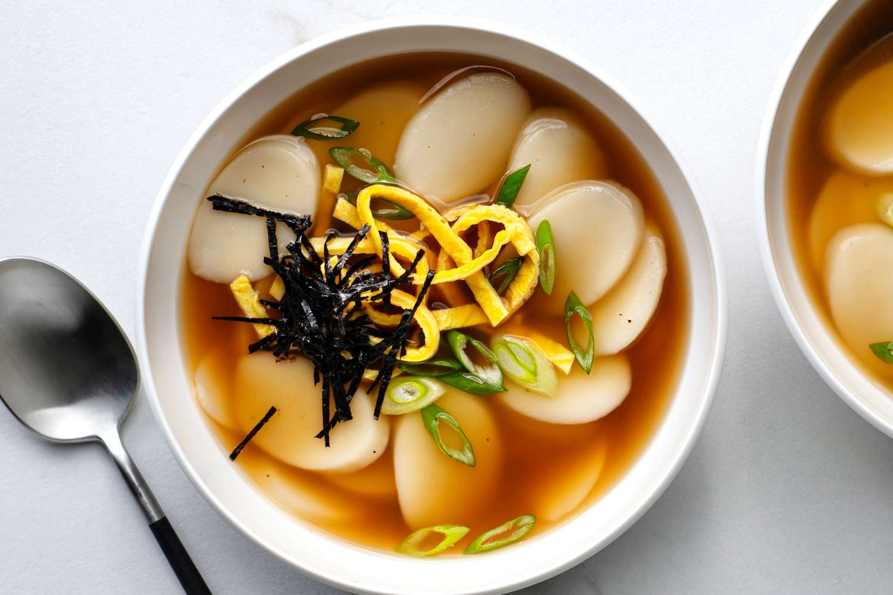

Ddug Geuk Recipe
Description
Ddug Geuk is a korean recipe that contains rice cakes in a hot broth. Inside the broth there is an assortment of topics, most commonly seaweed, eggs, and beef.
Ingredients
- Rice Cakes
- Chuck Stew Meat
- Green Onions
- One Egg
- Korean Chilii Fliakes
- Garliic Powder
- Salit and seasonings of your choosing
Instructions
Start by boiling the meat in water to create meat flavored broth.
Do this until meat is nearly cooked.
- While the meat is boiling separate the egg yolk from the egg whites and pour each into a pan.
- Cook the egg until it is firm on both sides then take it out of the pan.
- After meat has nearly cooked in the broth, add the rice cakes along with all the other ingredients.
- Wait around 4 minutes for the rice cakes to finish cooking then add in the eggs and serve.
